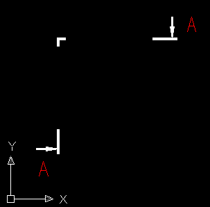

При ее выполнении задаются:
две или несколько точек определяющие расположение разреза (или сложного разреза в случае задания более чем двух точек);
задается точка, определяющая сторону направления взгляда на сечение.

Рисунок 1 — Результат выполнения команды CUT.
Символы обозначения разреза проставляются в алфавитном порядке.
Для редактирования символов разреза используйте стандартные средства редактирования ACAD.
Для установки текущего генерируемого символа разреза используйте команду INDEX.
Смотри также команды: